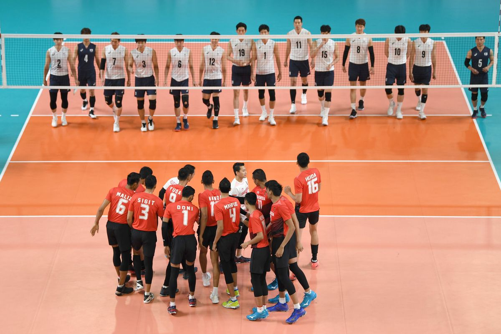

Selamat Datang di Valvarad VC
Valvarad Volleyball Club adalah klub voli profesional yang berdiri sejak 2010. Kami memiliki misi untuk mengembangkan bakat voli muda dan mencapai prestasi di tingkat nasional maupun internasional.
Sejarah Klub
Berdiri pada tahun 2010, Valvarad VC dimulai dari sekelompok pemuda yang memiliki passion terhadap olahraga voli. Dengan dedikasi dan kerja keras, kami berkembang menjadi klub profesional yang diakui di kancah regional.
Prestasi
- Juara 1 Turnamen Voli Regional 2022
- Juara 2 Liga Voli Nasional 2021
- Juara 3 Kejuaraan Voli Antar Kota 2020
- Pemain Terbaik Turnamen 2022 - Ahmad Rizal
Bergabung dengan Kami
Kami selalu membuka kesempatan bagi pemain berbakat untuk bergabung dengan Valvarad VC. Jika Anda tertarik, silakan hubungi kami melalui formulir kontak atau datang langsung ke lapangan latihan kami setiap hari Sabtu pukul 15.00-18.00.
Informasi Pendaftaran